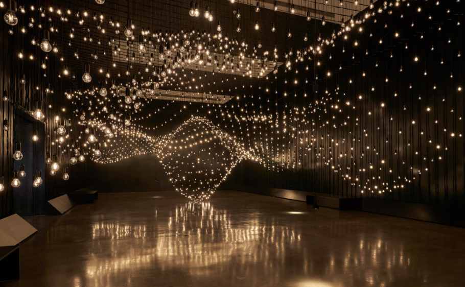

Click picture to open Pulse Room
I am greatly inspired by the Pulse Room because of it transformation through the use of personal biometric
data—visitors’ heartbeats—into a shared visual experience. By using light bulbs that flash in rhythm with
each participant’s pulse, it creates an emotional and immersive connection between people and technology.
This installation highlights the importance of real-time interaction, human-centered design, and collective
participation. Its simplicity combined with deep emotional impact demonstrates how technology and art can
merge to create meaningful experiences. I think that knowing the Pulse Room is greatly memorable because it
inspired me a lot in getting to know art that involves electronic such as Arduino - how such small piece of
material can create big and historical.